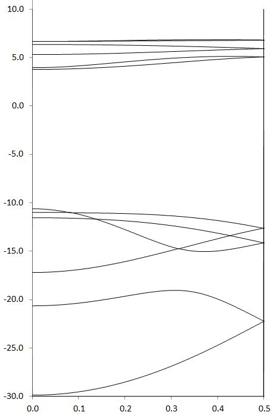
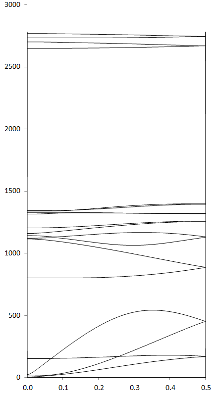

Polyethylene is a high polymer with the repeat unit C2H4. For the purposes of band-structure work the assumption is made that the polymer is of infinite length, i.e., that there are no end-effects, and that an examination of a part of the polymer would yield information about the complete system.
| Figure 1: MAKPOL data set - "make_Polyethylene.dat" |
mers=(8) html Polyethylene C 0.0 0 0.0 0 0.0 0 0 0 0 C 1.5 1 0.0 0 0.0 0 1 0 0 H 1.1 1 109.5 1 0.0 0 2 1 0 H 1.1 0 109.5 0 120.0 0 2 1 3 H 1.1 0 109.5 1 180.0 1 1 2 3 H 1.1 0 109.5 0 60.0 0 1 2 3 Tv 1.5 1 114.0 1 -120.0 1 2 1 3 |
Given that the repeat unit in polyethylene is C2H4, the first step is to use MAKPOL to use a small data-set to generate a larger data set that can be used by MOPAC for calculating band-structures. This small data-set consists of the fundamental repeat unit, here C2H4, and the translation vector, Tv. A large enough section of polymer would be needed to ensure that electronic effects at one end of the polymer would have a negligible effect at the other end. In polyethylene, eight C2H4 units should be sufficient for this task. For convenience, internal coordinates will be used, as they are easier to work with than Cartesian coordinates. The data set for use by MAKPOL is shown in Figure 1.
It is very easy to make mistakes in preparing data-sets for MAKPOL, so keyword HTML is added; this allows the resulting MOPAC data-set to be checked quickly.When this data-set is run using MAKPOL, a larger data set, "Polyethylene.mop", suitable for use in band-structure work, is written.
| Polyethylene Electronic Band Structure |
|  |
In addition to the simple graphic, a text file, here "Polyethylene.txt" will be written. This file is intended for use with Microsoft Excel to allow a more elaborate figure to be made.
Using symmetry is relatively easy for two and three dimensional solids, but, perhaps unexpectedly, is quite hard to use for polymers. For 2D and 3D solids, the various axes are well-defined; in polymers only the polymer axis is well-defined, the two axes perpendicular to the translation direction are not unambiguously defined. Because of this, when symmetry is used with polymers, the polymer must be orientated correctly before any symmetry operations can be done.
Orientating polyethylene is a straightforward process. The objective is to have the translation direction along the "x" axis, and the carbon backbone in the "xy" plane. This operation can be done in three steps:
By default, the translation vector that comes out of MAKPOL is not positioned along the "x" axis, so the first step is to convert the system from internal to Cartesian coordinates. This is achieved by using the two keywords 0SCF XYZ.
In order to have the Tv exactly along the "x" axis, it is helpful to have a dummy atom at the point where Tv will go. To do this, the coordinates of Tv are copied and pasted into the geometry after atom 1. Then, if the geometry is converted to internal coordinates, the new atom will be orientated exactly along the "x" axis. The new atom will eventually be a dummy atom, but, because dummy atoms are eliminated when changing coordinate systems, for just now the new atom is given a placeholder name, here Br. Use a name that is easy to locate. To convert to internal coordinates, use keywords 0SCF INT.
The geometry resulting from Step 2 is now correctly orientated. All that needs to be done now is to convert it into a data-set for geometry optimization. Starting with the ARC file from Step 2, re-label the placeholder atom "XX" and change the "bond length" optimization flag for Tv from "1" to "0". This ensures that the position of Tv will be the same as that of the dummy atom, i.e., along the "x" axis. Add keyword AUTOSYM to automatically impose symmetry. The new data-set, when run using MOPAC, will generate a BRZ file in which all atoms are correctly orientated relative to the "x", "y", and "z" axes.
Symmetry operations for polyethylene are isomorphous with the Abelian point-group D2h. The center of operation is the point half way between the first two carbon atoms in the Large Unit Cell. This point can easily be calculated given the Cartesian coordinates printed in the .out file from Step 3.
| Polyethylene Phonon Band Structure |
|  |
When symmetry operations, defined by a file with the same name as the BRZ file, but with the suffix .opt, are present, these operations will automatically be used to symmetrize the Fock or phonon matrices. In the case of polyethylene, these matrices are already very symmetric, so the effect on band-structures is insignificant.
If option "0" is used, this option allows individual points in a Brillouin zone to be calculated, then the associated little groups are generated. For a polymer, the only interesting points are 0.0 (the origin of k-space), 0.2 (a random point in the Brillouin zone), -0.2 (the previous point, but in the negative direction in k-space), and 0.5 (the boundary of the Brillouin zone).
To calculate the phonon spectrum, Re-run the geometry optimization, after changing the keywords from MERS=(8) HTML to XYZ to convert the geometry into Cartesian coordinates, and adding keywords OLDGEO FORCE MERS=(8) to the end of the data set so that a vibrational frequency calculation would be done, and a BRZ file generated. If MERS=(8) was present in the geometry optimization, a BRZ file would be produced; this would be a waste of time. Likewise, the geometry was obviously correct, so HTML was unnecessary.